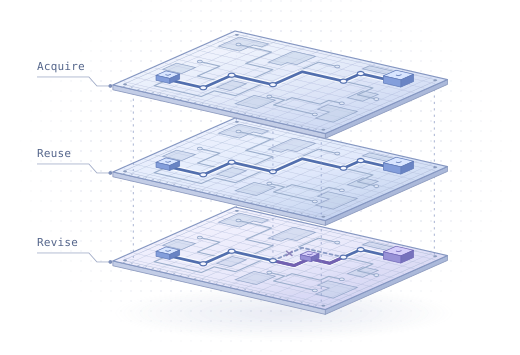
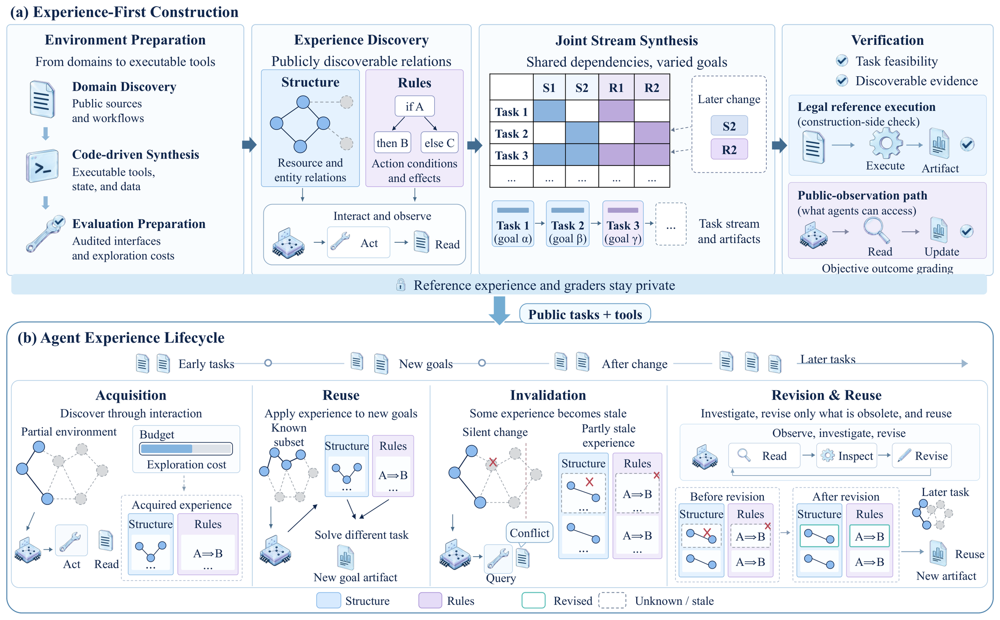
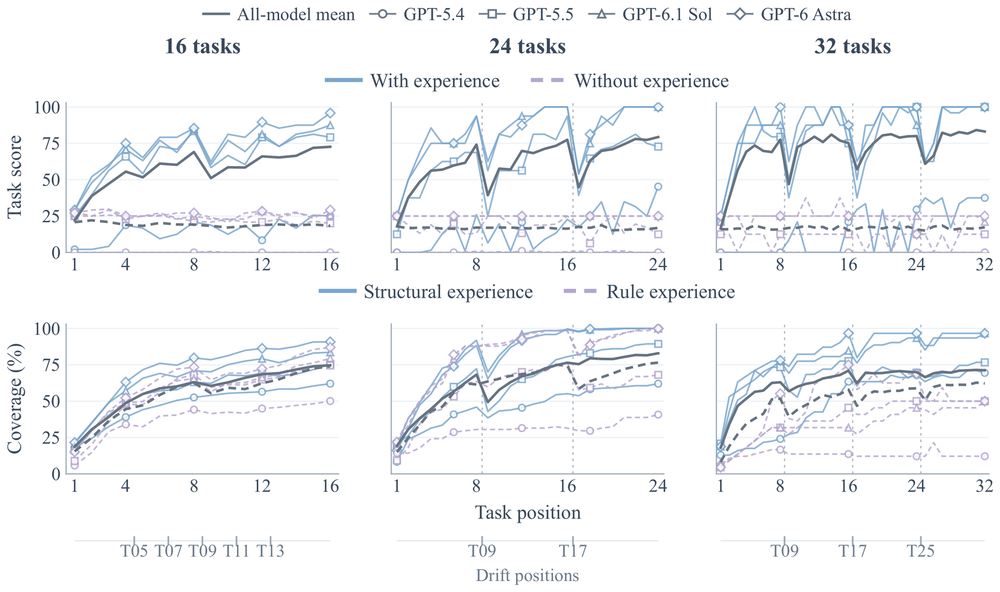
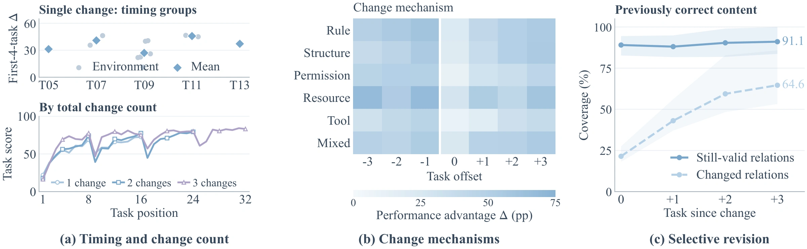
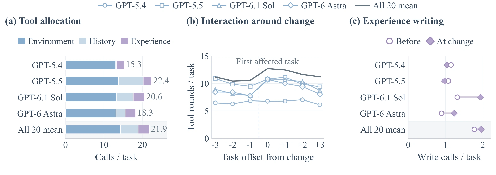

Discover
Agents explore an unfamiliar environment. Structural experience records how resources connect. Rule experience captures principles and constraints that guide actions.
Towards Robust Long-Lived Agents: Benchmarking Experience Lifecycles in Evolving Environments
When an environment changes without warning, which parts of their experience do agents keep, and which do they revise?

1The Hong Kong University of Science and Technology2Guangdong Laboratory of Artificial Intelligence and Digital Economy (SZ)3Huawei Inc.
* Equal contribution · † Corresponding authors
An agent can find a file after it moves and finish the task while its notes still point to the old location. ReScopeBench tracks both what agents deliver and what they save for the next task.

↗ EnlargeAgents explore an unfamiliar environment. Structural experience records how resources connect. Rule experience captures principles and constraints that guide actions.
Later tasks draw on the same knowledge. Paired runs begin from the same state. One retains memory, skills, and retrievable history between tasks. The other clears them.
Local changes invalidate selected facts while others remain true. With a limited exploration budget, the agent must decide what to recheck.
As agents become more capable, they are moving beyond one-off tasks toward sustained assistance across successive user goals. Such assistance requires agents to discover how unfamiliar environments work, reuse what they learn across tasks, and keep that experience current as environments evolve. Existing benchmarks increasingly study experience reuse and adaptation, but provide limited insight into which parts of accumulated experience agents revise, retain, or lose. To address this gap, we introduce ReScopeBench, a benchmark for the experience lifecycle across 18 interactive environments. It distinguishes structural experience about how an environment is organized and accessed from rule experience about reusable principles and constraints that guide decisions across tasks. To study how experience is acquired, reused, and revised, we propose an experience-first construction approach. It builds task streams around shared experience and introduces silent environmental changes. We evaluate task performance and track changes in saved experience throughout each stream. Across 20 models, we find that retained experience improves task performance, but agents struggle to keep it current as environments change. Even when the required experience is correctly recorded, agents do not always complete tasks successfully. These findings identify selective maintenance and effective use as complementary challenges for long-lived agents.
All 20 models score higher on average when they retain experience. Yet even the best model records only 37.63% of update targets after the first task affected by a change.
| Model | Performance | Experience | Avg. | |||||
|---|---|---|---|---|---|---|---|---|
| BP | EP | DP | SC | RC | UC | RT | ||
| Compact Open-Weight Models | ||||||||
| Qwen3.5-9B Alibaba | 0.51 | 0.89 | 0.74 | 15.14 | 18.43 | 1.67 | 2.95 | 5.76 |
| Qwen3.5-35B-A3B Alibaba | 0.82 | 2.75 | 0.89 | 18.19 | 18.21 | 0.40 | 4.18 | 6.49 |
| Qwen3.8-27B Alibaba | 20.07 | 62.48 | 38.21 | 60.90 | 55.18 | 29.05 | 59.17 | 46.44 |
| Commercial Models | ||||||||
| GPT-5.4 OpenAI | 0.09 | 14.96 | 12.38 | 47.75 | 33.15 | 12.91 | 22.85 | 20.58 |
| MiniMax-M3 MiniMax | 5.61 | 34.50 | 26.18 | 45.59 | 36.63 | 11.70 | 35.57 | 27.97 |
| GPT-6 Luna OpenAI | 20.83 | 54.69 | 30.06 | 56.54 | 51.09 | 17.50 | 49.82 | 40.08 |
| GPT-5.5 OpenAI | 20.55 | 66.23 | 30.29 | 60.34 | 53.84 | 17.50 | 44.88 | 41.95 |
| Doubao-Seed-2.1-Pro ByteDance | 18.20 | 64.58 | 39.88 | 62.87 | 59.79 | 29.75 | 64.00 | 48.44 |
| Kimi-K3 Moonshot | 22.23 | 74.08 | 39.35 | 65.50 | 59.72 | 28.75 | 64.50 | 50.59 |
| DeepSeek-V4-Pro-0813 DeepSeek | 19.67 | 70.59 | 44.75 | 64.21 | 63.00 | 32.44 | 63.41 | 51.15 |
| GLM-5.3-Flash Z.ai | 22.35 | 73.39 | 42.42 | 65.76 | 57.83 | 32.07 | 65.62 | 51.35 |
| GPT-6.1 Sol OpenAI | 24.84 | 73.97 | 39.10 | 71.63 | 60.66 | 24.73 | 64.62 | 51.36 |
| Gemini-3.8-Flash Google | 25.70 | 72.47 | 40.51 | 65.49 | 60.56 | 33.53 | 65.14 | 51.91 |
| MiMo-V2.6-Pro Xiaomi | 24.60 | 73.94 | 44.73 | 65.86 | 61.79 | 27.93 | 67.25 | 52.30 |
| DeepSeek-V4.1-Flash DeepSeek | 19.98 | 74.73 | 47.50 | 68.63 | 65.18 | 33.41 | 65.56 | 53.57 |
| Qwen3.8-Max Alibaba | 24.09 | 73.44 | 46.98 | 67.56 | 66.25 | 31.10 | 68.64 | 54.01 |
| GLM-5.3 Z.ai | 23.78 | 75.02 | 48.81 | 67.38 | 66.32 | 33.00 | 69.88 | 54.89 |
| GPT-6 Astra OpenAI | 25.86 | 77.50 | 42.11 | 75.68 | 66.17 | 29.37 | 74.12 | 55.83 |
| Claude Opus 5.5 Anthropic | 21.94 | 74.98 | 46.75 | 71.70 | 73.22 | 33.27 | 72.89 | 56.39 |
| Gemini-4-Argon Google | 25.86 | 81.12 | 50.37 | 76.83 | 70.81 | 37.63 | 78.72 | 60.19 |
Scores range from 0 to 100. Each environment has equal weight. Bold marks the best score in each column across all 20 models.
BP and EP measure mean task scores without and with retained experience. DP measures the score with experience on the first task affected by each change.
SC and RC measure coverage of current structural and rule knowledge. UC measures how much changed or new information is recorded after the first affected task. RT rewards earlier recovery of all update targets together with previously correct information that still applies.
In the 24-task streams, performance drops at both changes. At task 9, structural coverage falls while rule coverage stays comparatively stable. At task 17, the pattern reverses. The dark curves average all 20 models.

↗ EnlargeWe follow 487 cases in eight environments where agents had recorded the relations that later changed. Across the first four affected tasks, coverage of the replacements rose from 21.47% to 64.63%. Coverage of previously correct relations that remained valid stayed between 88.07% and 91.07%.

↗ EnlargeAmong 1,304 matched requests in Filesystem and Oracle, delivery was 95.31% with complete prior experience and 71.28% with incomplete prior experience. Missing submissions accounted for 19.42 points of that 24.03-point gap.

↗ EnlargeIn the Filesystem environment, GPT-5.5 had learned where to deliver the Riverlight Ledger index. A silent change moved the destination directory for Grove’s amber lane.
The agent saved the manifest, destination, routing token, and overwrite policy. The amber lane pointed to the original directory.
A delivery using the saved directory returned DELIVERY_POLICY_MISMATCH. The agent recorded a warning to recheck the lane.
Two tool reads revealed a new directory handle and an unchanged policy. The repaired record supported five later deliveries without another business read for the manifest.
@misc{huang2026rescopebench,
title = {Towards Robust Long-Lived Agents: Benchmarking Experience Lifecycles in Evolving Environments},
author = {Huang, Shijue and Guo, Hangyu and Zhang, Hengheng and An, Guo and He, Zhitao and Tian, Qi and Feng, Yiren},
year = {2026},
note = {Preprint},
url = {https://ReScopeBench.github.io/}
}This research was financially supported by the Open Research Fund from Guangdong Laboratory of Artificial Intelligence and Digital Economy (SZ), under Grant No. GML-KF-26-06.